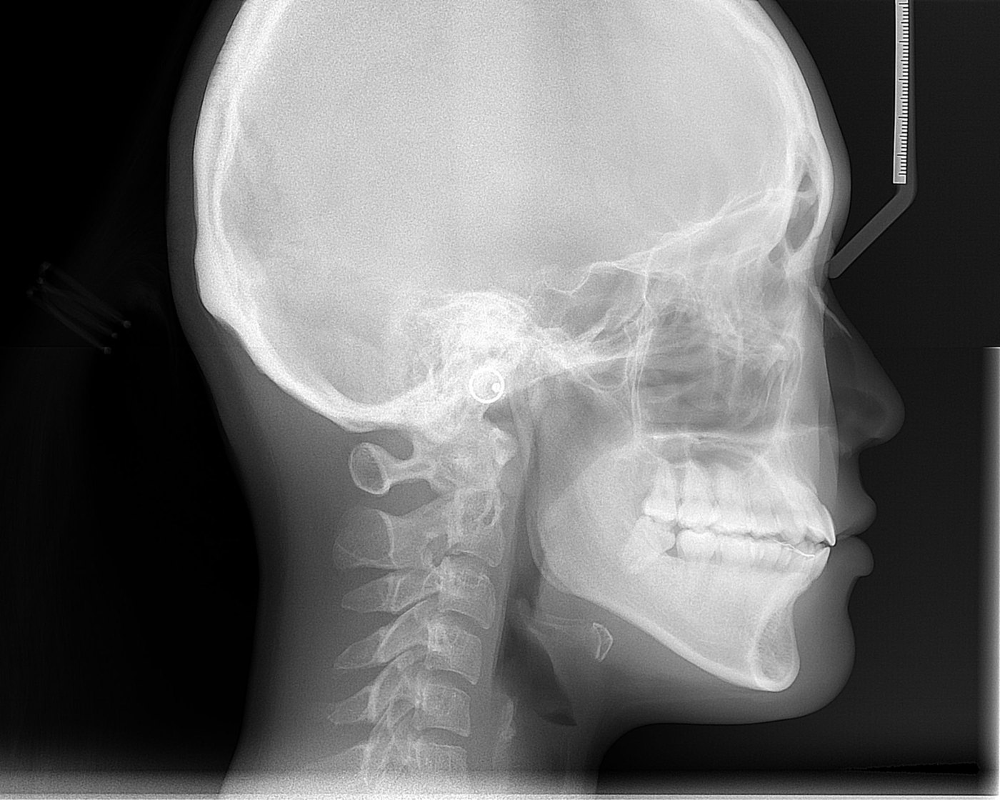

for dental students, by a dental student
Ceph
Ceph
Trace
Cephalometric tracing that finally makes sense. Tap the landmarks, watch the angles appear, and actually learn what they mean.

18landmarks with guides
21measurements
4analyses: Steiner, Downs, Tweed, Wits
0uploads. Runs on your phone.